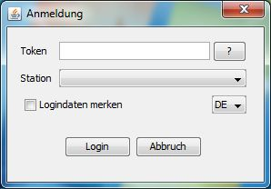

Anmelden

Nach dem Start von Station Admin erscheint der Login-Dialog. Um Dich anzumelden benötigst du ein Token.
Wenn Du noch kein Token für Statio Admin erzeugt hast klicke auf das "?" neben dem Eingabefeld oder öffne https://radioadmin.laut.fm/login?callback_url=StationAdmin direkt im Browser. Logge Dich ein und kopiere das im Browser anzeigte Token in das entsprechende Eingabefeld in Station Admin.
Drücke die Tab- oder die Return-Taste um die Liste der mit Deinem Account verbundenen Stationen zu aktualisieren. Wähle dann die Station aus für die Du Station Admin starten möchtest. Klicke dann auf .
Du mußt nicht jedes Mal ein neues Token eingeben. Wenn Du auswählst merkt sich Station Admin das Token und die Station und zeigt dies beim nächsten Öffnen des Logindialogs wieder an.
Du kannst das jederzeit wieder aufheben in dem Du bei einer späteren Anmeldung den Haken wieder wegnimmst.
Auch eine automatische Anmeldung ohne Anzeige des Login-Dialogs ist möglich: Öffne dazu im -Menü und gehe zu dem Punkt : Dort kannst Du "Beim Programmstart automatisch einloggen" aktivieren. Dies funktioniert allerdings nur wenn Du bei der letzten Anmeldung aktiviert hattest.
Synchronisieren
Als nächstes siehst Du das Hauptfenster von Station Admin mit den Bereichen Übersicht, Playlists und Meine Titel. Es sind allerdings noch keinerlei Daten vorhanden - Station Admin zeigt weder irgendwelche Playlists noch Titel an. Um die Daten vom laut.fm-Server zu laden rufe im -Menü in der Menüleiste oben den Menüpunkt auf. Dieser Vorgang kann - je nach Zahl und Größe Deiner Playlists - schon mal ein oder zwei Minuten dauern.
Mehr über die Synchronisierung erfährt Du hier.